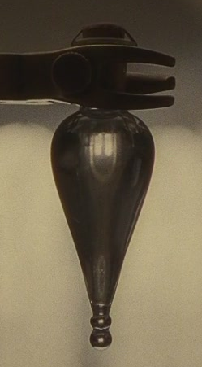
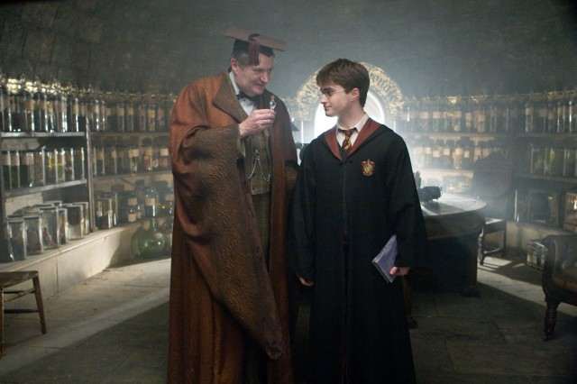

Felix Felicis
Description

Felix Felicis, also called "Liquid Luck", is a magical potion that makes the drinker lucky for a period of time, during which everything they attempt will be successful.
Brewing Time: Six Months
Difficulty Level: Advanced
Necessary Equipment
- Standard Size Cauldron, any material
- Working Wand
- Dragonhide Gloves
Ingredients
- Ashwinder Egg
- Squill Bulb
- Murtlap tentacle
- Tincture of Thyme
- Occamy eggshell
- Powdered common rue
- Horseradish
- Powdered Rue
Recipe
- Add Ashwinder egg to a cauldron, then add horseradish and heat.
- Juice a squill bulb, add to the cauldron and stir vigorously
- Chop up anemone-like growth on the back of Murtlap, add to mixture and heat.
- Add a dash of tincture of thyme and stir slowly.
- Grind up Occamy eggshell and add to mixture.
- Stir slowly then heat the cauldron.
- Add a sprinkle of powdered common rue.
- Stir vigorously then heat the cauldron one last time.
- Wave wand over potion in a figure of eight and say incantation ‘Felixempra!’
- Let stew for 6 months.
Characteristics (if Made Correctly)
- Molten gold in colour
- Droplets leaping out at intervals like goldfish soaring from their bowl.
Side-Effects
